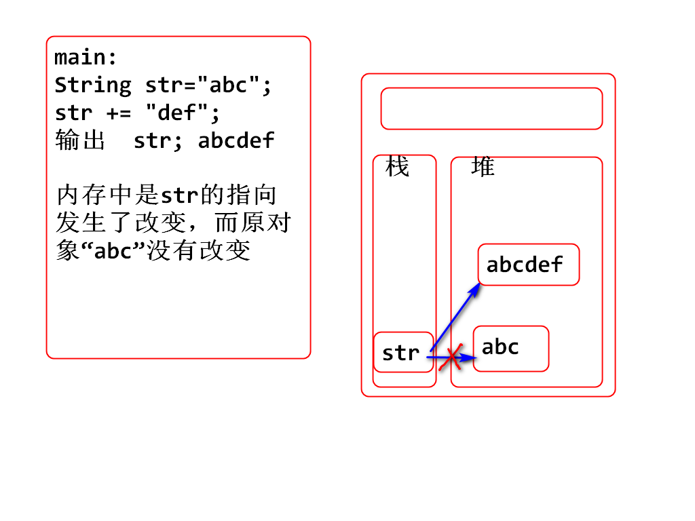

花倩 QQ：2533897869
/**
* 注释内容
*/
只能作用在3个位置：
文档注释是用于说明类，方法，常量的功能的 --用于导出文档时使用
导出doc文档步骤：-了解即可，不要求掌握
java中规定String一旦创建就不可以改变了。
案例：
public static void main(String[] args) {
String str = "abc";
str += "def";
System.out.println(str); //abcdef
}
总结：String对象创建后是不可变的，上题中其实是str引用指向发生了改
变，在内存中新创建了一个String对象“abcdef”,str重新指向了此对象;
原对象“abc”是没有发生改变的

Debug步骤：
1. 定义String str = "abc";
2. str += "def";
3. 打印输出str
4. 在第一行双击打端点，然后Debug as运行，看参数指向对象地址的变化
Debug界面布局重置方式：
Window-->Perspection-->Reset perspection
String的本质：底层封装了一个字符数组。
String str = new String("abc");
通过new创建String对象，常用的构造方法有：
1. new String(String)
2. new String(char[])
问题：
String str = new String("hello");
String str1 = new String("hello");
str == str1 ? false
注意点：一旦new，就创建一个新对象，不论内容是否相同
String str = "hello"; -- 字符串字面量，是new String（“”）的简写
作用都是创建字符串对象，第二种方式更简单，推荐使用。
第二种方式优点：
如何实现的？
题目：
String s1 = "ab",s2="cd",s3="ab";
String s4 = new String("ab");
s1==s3? true
s1==s4? false
问题：
String s1="a";
String s2="b";
String s3="ab";
String s4=s1+s2;
String s5 = "a"+"b";
s3==s4 ? false
s3==s5 ? true 编译器优化了
java中字符串字面量之间的拼接，编译器在编译期会进行优化，在.class文件中保存的是拼接后的结果
字符串变量之间的拼接，编译器不会优化，底层采用new的方式创建了一个新的String对象
String str = new String("abc"); 创建了几个String对象？
2个,分别是
new出来的String对象和“abc”
升级版面试题：
String str = new String("a"+"b");创建了几个String对象？
2个
注意：字面量间的拼接编译器会优化
indexOf系列：
eclipse清除缓存步骤： project-->clean-->可以全选/可以选中某个要清除的项目-->clean即可
substring系列方法：
trim():String
charAt(int):char
练习题:判断字符串是否是回文 上海自来水来自海上
/*
* 判断字符串是否是回文
*/
String str = "上海自来水来自海上";
boolean flag = false;
for(int i=0;i<str.length()/2;i++) {
char c1 = str.charAt(i);
char c2 = str.charAt(str.length()-1-i);
if(c1!=c2) {
System.out.println("不是回文");
flag = true;
break;
}
}
if(!flag) { // !flag 等同于flag为false
System.out.println("是回文");
}
文档注释：功能注释
String：
String对象创建的2种方式
方法操作（api）：
substring(int start,int end):String
trim():String
作业题：截取域名：
www.baidu.com
www.tarena.com.cn
提示：截取两个.之间的内容